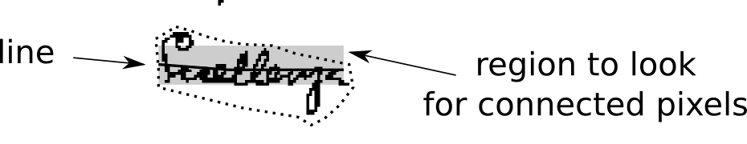

| Class | Description |
|---|---|
| JettyServer |
This launches the Jetty service
|
| JettyServerThread |
This launches an instance of the Jetty service
|
| Utils |
Some routines that need sharing by all
|
The TILT service is designed to automate the process of recognising word-shapes on images. It doesn't attempt to do optical character recognition (OCR) on those words because in manuscripts this is too difficult and the word-shapes vary too much between hands etc. Instead it tries to just recognise the shapes or outlines of words, and to link them to the words in a supplied transcription. In this way the reader of a text+image can pass the mouse over or tap on a text word by word and see the area of an image corresponding to a word or vice versa.
In order to do this TILT first reduces the image, assumed to be
in colour, to plain black and white. The first step is to reduce
to 256 shade greyscale.
convertToGreyscale
performs this service. Next the image is reduced to pure black and white
by passing over it a local contrast filter. Simply converting to black and
white in the same way as converting it to greyscale would not work if the
lighting is uneven. The method employed in
convertToTwoTone
is borrowed from the
ocropus toolset.
Removal of noise involves the identification of borders. For this
the Border class examines the edges of
the image, looking for dark areas or 'blobs' (Blob)
on the margins, followed by light regions deeper in. In these areas any
connected black regions are reduced to white.
In order to recognise words their approximate location on the page
and their sequence on the page must first be worked out. For this TILT
assumes for the moment a top to bottom and left to right orientation
of text. Other orientations could, however, be supplied as options
later on. Since text in manuscripts may be deliberately warped, and
line spacing may be very uneven, and may include deletions and insertions
traditional OCR methods, which rely on a basically even distribution of
lines on the page won't work. TILT thus divides the page into a number of
rectangular regions, about 200 down for a 1200 pixel image and just 25
across. The reasons for this is that text lines have this shape. The black
pixels in each rectangle are added up, and if they exceed the mean, they
are considered to be part of a line. Lines are identified by examining
columns of the rectangles, and assuming that a peak value is the
centre of a line. This is the purpose of the FindLines
class.
But this only identifies line fragments and does not arrange them into
lines. The purpose of the tilt.image.matchup package is to
align adjacent line-fragments and assemble them into lines. The aligned
line-fragments are then assembled into an entire page of lines by the
tilt.image.page package.
A narrow band around each line is scanned for black pixels.

Any that are found are extended as long as they are part of a blob of connected pixels. Each blob is then surrounded by its closest fit polygon. FInally the polygons are merged wherever the distance between them is less than a fraction of the average word space.